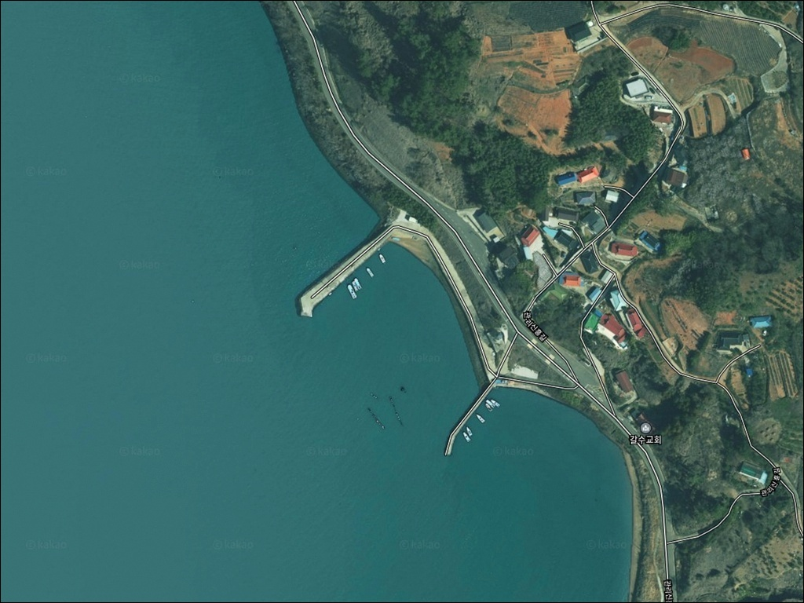
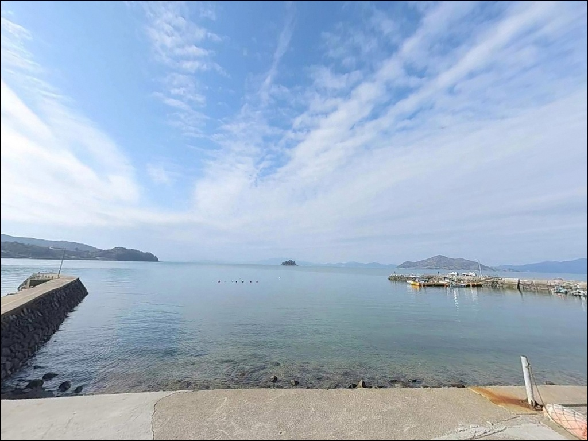
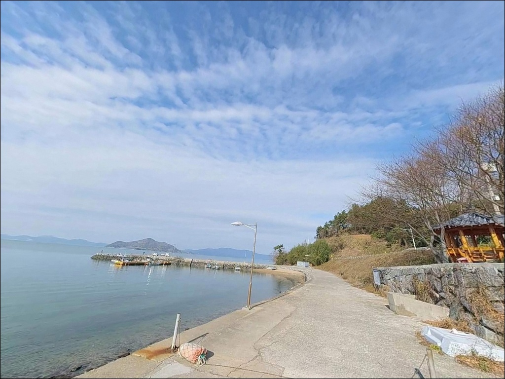
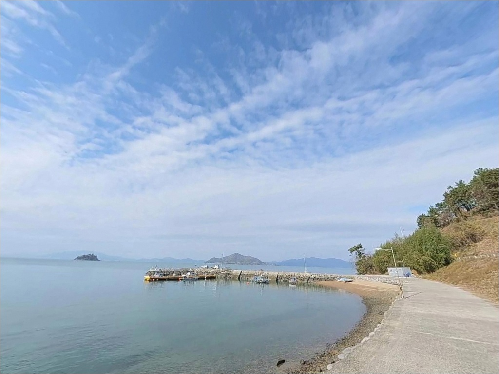
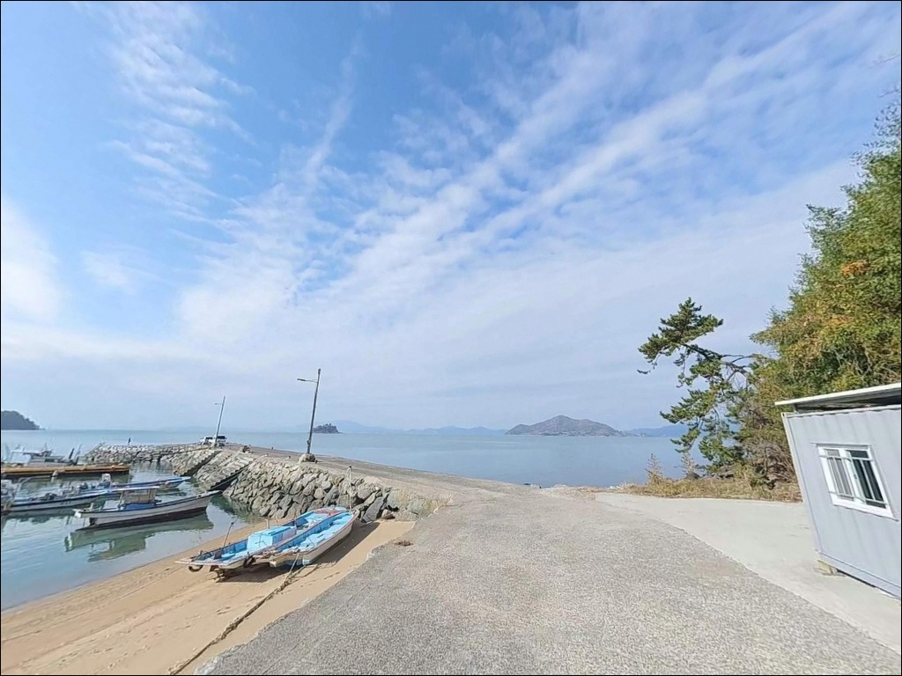
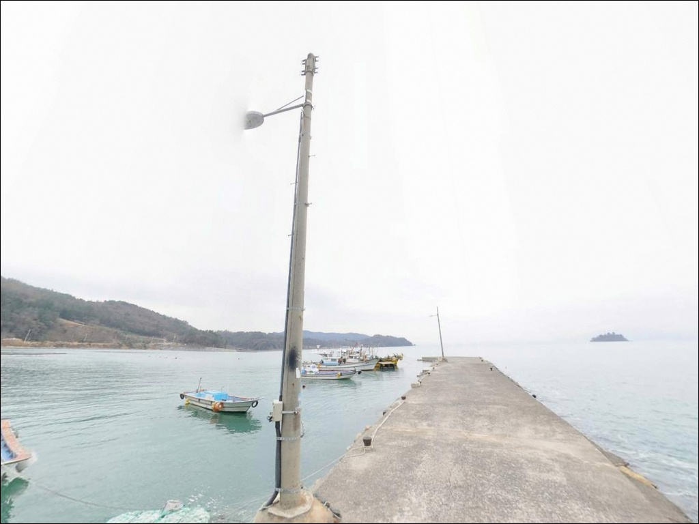
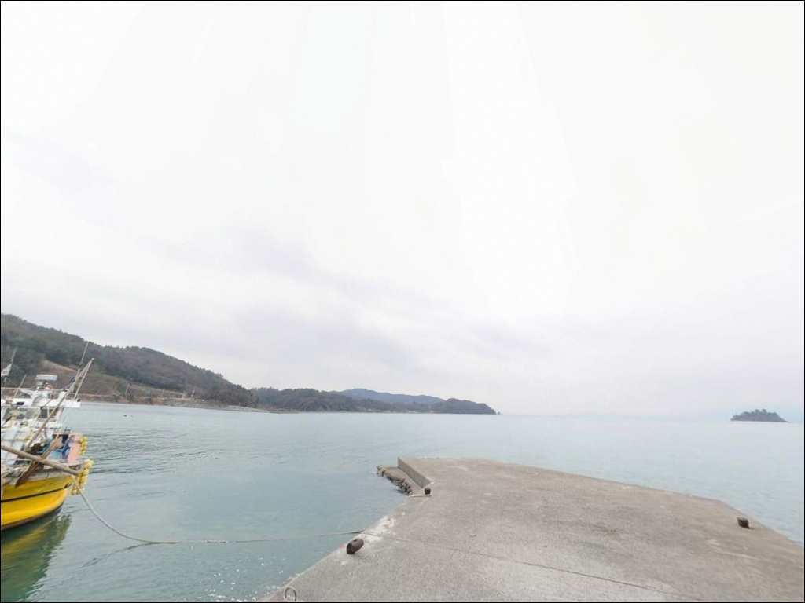
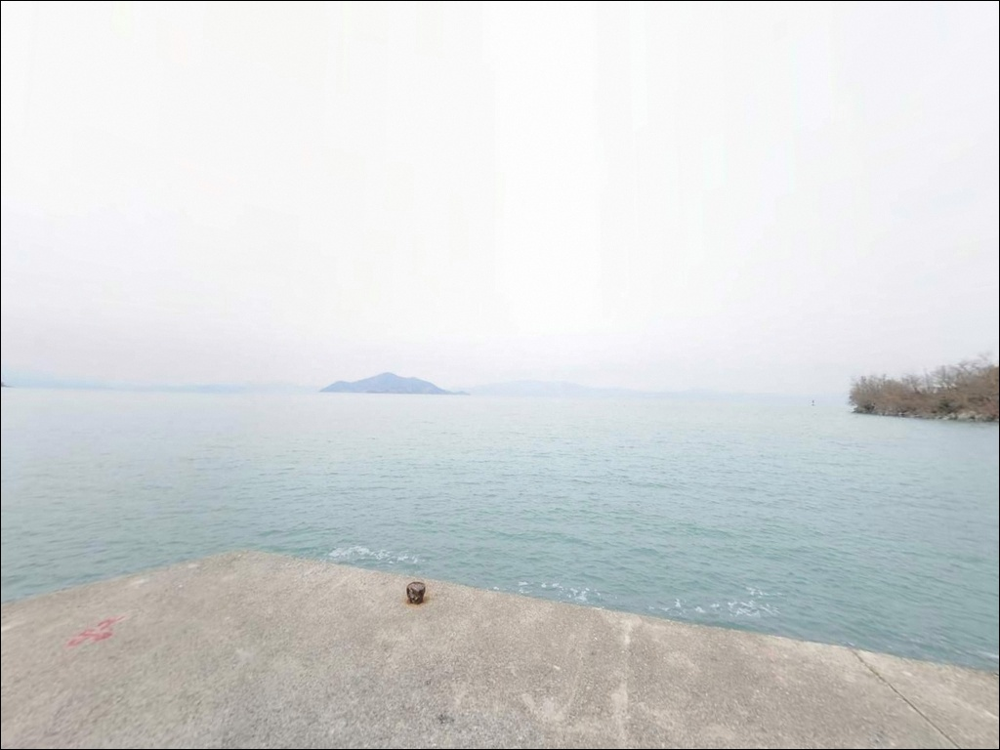
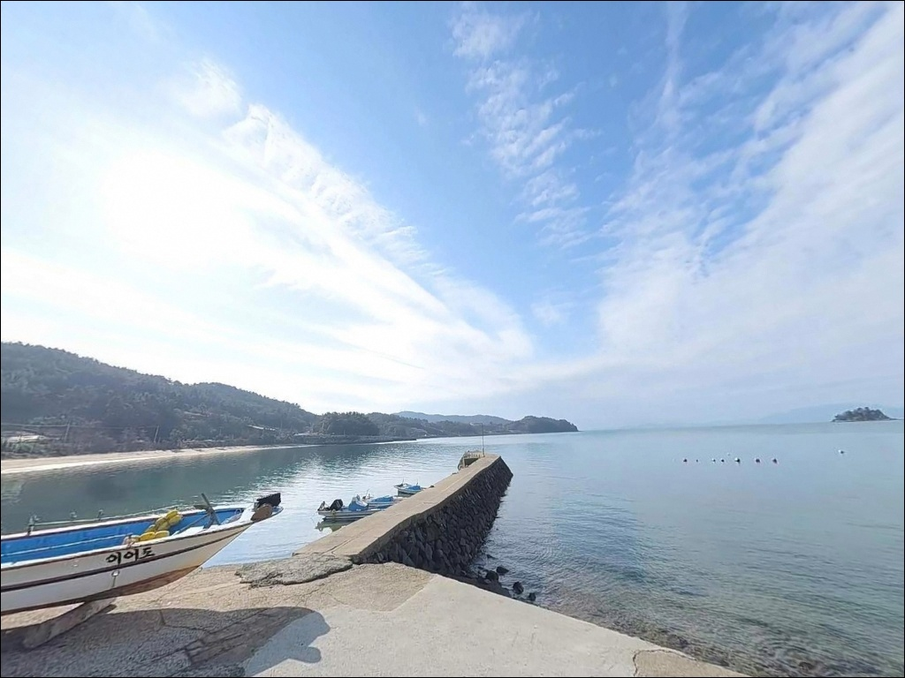

이 페이지에는 광고(제휴 링크 포함)가 있으며, 광고 링크를 통해 구매하면 운영자가 판매 수익 또는 수수료를 받을 수 있습니다. 포인트 사진: 카카오맵 스카이뷰·로드뷰. 이 페이지의 지도·사진 이미지는 카카오맵의 실제 서비스 이미지와 다를 수 있습니다.


간조에 입질 끊길 때, 장계리선착장 원투낚시 들물 초입에서 살아난 반응
포인트 안내
장계리선착장
전남 고흥군 도양읍 장계리 산 72-17
득량만 내만에 자리한 홈통 구조 포인트에서
조류와 수심이 가장 크게 변하는 구간이
바로 간조 직전과 들물 초입입니다.
이 두 타이밍을 놓치면
채비를 풀었다 걷었다 하는 것 외에
달리 할 수 있는 일이 없어집니다.
장계리선착장은 전남 고흥군 도양읍 장계리 해안에 위치한
장수마을 방파제 선착장입니다.
좌우 방파제와 선착장이 홈통형 만 안쪽을 감싸는 구조로,
방파제 상부가 넓고 차량이 끝단까지 진입할 수 있어
원투낚시와 에깅을 함께 운영하기 좋은 포인트입니다.
이 글은 장계리선착장의
진입 동선, 차박 여건, 물때 판단 기준,
낚시 방식별 공략 조건에 집중합니다.
특정 조황 단정이나 어종 보장은
이 글의 범위에 포함되지 않습니다.

1. 진입 동선과 포인트 접근성
장계리선착장은 도양읍 소재지에서
해안도로를 따라 접근하는 구조입니다.
장계리 일대 해안도로는 차량 교행이 가능한 수준으로 정비되어 있으며,
선착장 진입 직전까지 포장 도로가 이어집니다.
방파제 상부는 폭이 넓고 2단 구조로 형성되어 있으며,
차량이 방파제 끝단까지 진입 가능한 구조입니다.
방파제 초입에 슬로프도 있어
카약이나 소형 고무보트 런칭도 어렵지 않습니다.
대형 캠핑카의 경우 방파제 상부 폭을 미리 확인하고
진입 여부를 판단하는 편이 안전합니다.
주차는 방파제 초입 및 상부 평탄 구간을 활용하며,
선착장 인접 해안도로변도 차량 대기가 가능합니다.
소규모 어촌 포인트 특성상
어선 입출항 동선과 겹치지 않는 자리를
먼저 확인하고 주차하는 것이 기본입니다.

2. 차박 환경과 야간 체류 여건
장계리선착장은 방파제 상부 공간이 넓어
낚시 후 그 자리에서 하룻밤 머무는 용도로
활용하기에 나쁘지 않습니다.
홈통형 내만 구조라 외해 직결 포인트에 비해
파도 소음과 바람 영향이 적은 편이며,
조용히 하룻밤을 보내기에 적합한 분위기입니다.
장계리 마을과 인접한 생활형 선착장이라
완전한 외딴 포인트는 아닙니다.
야간에는 민가 생활 조명의 영향이 일부 있으며,
가로등은 제한적이어서
개인 조명 장비는 반드시 준비해야 합니다.
어촌 마을과 인접한 만큼
야간 엔진 공회전이나 소음에는 각별히 주의하는 것이 기본 매너입니다.
차박이 목적이라면
방파제 상부 공간에서 주차 후
낚시와 병행하는 방식이 가장 현실적입니다.
공간이 여의치 않거나 마을 활동이 활발한 시간대에는
인근 해안도로변 여유 구간을 대기 후보지로 활용할 수 있습니다.


3. 주변 편의시설 및 인프라 현황
방파제 초입에 공용화장실과 원두막이 설치되어 있습니다.
소규모 선착장 포인트에서는 보기 드문 편의 여건이라
장시간 체류 시 기본적인 편의를 갖출 수 있습니다.
선착장 반경 3km 이내는
도양읍 중심지 방향으로 이동 시
농협 및 소규모 상가가 분포합니다.
녹동항 중심가까지 이동하면
이마트24 고흥녹동점(24시간)·CU 고흥녹동신항점(24시간)·하나로마트 녹동농협을 이용할 수 있습니다.
주유소(GS주유소 봉암리)와 약국(도양약국)도
녹동항 일대에서 확인됩니다.
출조 전 식자재, 낚시 미끼, 연료를
녹동항 일대에서 미리 보충해 두면
현장에서 부족함 없이 운영할 수 있습니다.
응급 상황 발생 시에도
녹동 방향으로 이동하는 것이 가장 빠른 동선입니다.

4. 방문 전 반드시 챙겨야 할 준비사항
장계리선착장 방문 전에 가장 먼저 확인할 것은
물때입니다.
득량만 내만 포인트 특성상 간조 시 수심이 크게 낮아지며,
수심이 2m 이하로 내려가는 구간에서는
채비 운용 자체가 제한됩니다.
바다타임에서 도양읍 장계리 기준 물때를 미리 확인하고,
간조 직전 2시간과 들물 초입 타이밍을
중심으로 일정을 맞추는 것이 기본 전략입니다.
내만이라도 기상 변화는 예보보다 빠르게 찾아올 수 있습니다.
당일 아침 기상청 해양 기상 예보를
한 번 더 확인하고 출발하는 것이
헛걸음을 막는 조건입니다.
뻘·모래 혼합 저질 지형 특성상
채비 소모가 발생할 수 있으므로
여분 채비는 넉넉하게 준비해 두는 편이 좋습니다.
장계리선착장은 어민 작업 공간과 겹칠 수 있습니다.
어선 입출항 동선을 먼저 파악하고
그 동선을 막지 않는 자리에서 낚시하는 것이
기본 매너이며, 야간에는
헤드랜턴과 구명조끼를 반드시 착용해야 합니다.

5. 지형 기반 낚시 여건 분석
장계리선착장이 품고 있는 핵심은
홈통형 내만 구조입니다.
좌우 방파제가 만 입구를 감싸는 형태로,
방파제 끝단에서 수심이 급격히 변하는 구간이 형성됩니다.
득량만 물골 방향의 조류가
이 끝단 구간을 따라 흐르면서
회유성 어종이 지나는 길목을 만들어냅니다.
수심은 만조 기준 선착장 전면 2~4m 수준으로 형성되며,
방파제 끝단 쪽으로 갈수록
수심이 보다 안정적으로 유지되는 구조입니다.
저질은 뻘과 모래가 혼합된 내만형 바닥으로,
바닥층 어종이 머무르기 좋은 환경을 갖추고 있습니다.
조류는 외해 직결 포인트에 비해 완만한 편이지만,
간조와 만조 사이 조류 변화가 가장 크게 나타나는 타이밍에
입질이 집중되는 패턴을 보이는 해역입니다.
득량만 서안 내만권 특성상 봄 갑오징어 시즌이 형성되는 해역이며,
두족류와 바닥 어종이 함께 노려지는 복합 지형입니다.
출조 전에 도양읍 장계리 조황, 장수항 방파제 조황으로
최신 현장 분위기를 꼭 검색해 보시기 바랍니다.


6. 장계리선착장 낚시 방식별 공략 조건
이 포인트에서 가장 잘 맞는 방식은
원투낚시입니다.
뻘·모래 혼합 저질에 적합한 청갯지렁이·참갯지렁이 미끼로
방파제 끝단에서 수로 방향으로 장타를 보내면
붕장어·보구치·숭어·도다리 등
이 해역에서 기대할 수 있는 바닥 어종을 노릴 수 있습니다.
간조 직전과 들물 초입이 가장 유효한 타이밍입니다.
에깅은 봄 갑오징어 산란 시즌(4~6월)에
득량만 내만권에서 성과를 기대해 볼 수 있는 방식입니다.
만조 전후 수심이 3m 이상 확보되는 구간에서
방파제 끝단 가장자리를 에기로 탐색하는 방법이 어울립니다.
여름 이후 주꾸미 시즌에도
동일 채비로 공략이 가능합니다.
루어낚시도 이 포인트 구조에 잘 맞습니다.
도양읍 연안 전역이 낙지·문어 루어 포인트로
알려진 해역으로,
문어루어와 쭈꾸미 전용 채비를
내만 조류 변화에 맞춰 운영하는 방식이 유효합니다.
야간에는 선착장 직벽 주변 볼락 라이트게임도
방파제 내벽 측을 중심으로 노려볼 만합니다.

7. 대안 포인트와 플랜 B 동선
장계리선착장 조건이 여의치 않거나
주차 공간이 이미 채워진 상황이라면,
녹동항 방파제가 가장 현실적인 첫 번째 대안입니다.
도양읍에서 차량으로 10km 이내 거리이며,
방파제 규모가 크고 진입과 주차 여건이 안정적입니다.
원투·에깅·루어 등 복수 방식을
모두 대응할 수 있는 포인트입니다.
잠두방파제(전남 고흥군 도양읍 용정리)도
장계리선착장에서 4~5km 거리로
같은 도양읍 내만 해역에 위치합니다.
테트라포트 없이 진입이 편리하고,
뻘바닥 지형으로 낙지·갑오징어·붕장어를
노리는 패턴이 유사합니다.
차박 중심으로 대안 포인트를 찾는다면
녹동항 인근 도로변 공영 주차 공간이
화장실 접근성과 편의시설 측면에서
가장 안정적인 선택입니다.
장계리에서 조황이 기대에 못 미칠 경우
녹동항을 거점으로 삼고
이 일대 도양읍 방파제를 돌아보는 동선이 효율적입니다.
방문 전 고흥 도양 조황 키워드로
최신 포인트 분위기를 미리 파악해 두시기 바랍니다.

물때 하나만 맞춰도
장계리선착장이 달라 보입니다
원투낚시나 에깅을 즐기는 낚시인이라면
장계리선착장의 홈통형 방파제 구조는
복수 방식을 동시에 운영하기 좋은 지형입니다.
차량이 방파제 끝단까지 들어가고
화장실도 초입에 갖춰져 있어
장시간 체류에 부담이 적습니다.
다만 득량만 내만 포인트 특성상
물때를 계산하지 않고 들어가면
수심이 낮아진 간조 시간대를 고스란히 맞닥뜨릴 수 있습니다.
간조 직전과 들물 초입 타이밍을
중심으로 일정을 잡는다면
이 포인트가 보여줄 수 있는 최적의 조건을 만날 수 있습니다.
조용한 어촌 내만에서 물때에 맞춰
채비를 풀고 방파제 끝단에 앉아 하룻밤을 보낼 수 있다면,
낚시와 차박을 동시에 즐기기에 충분한 포인트입니다.